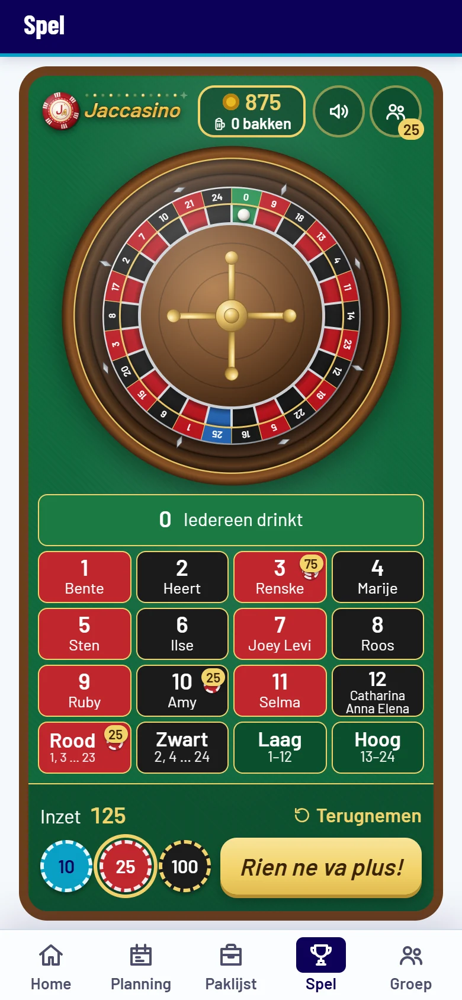
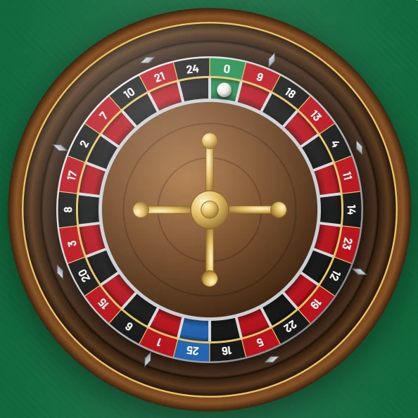
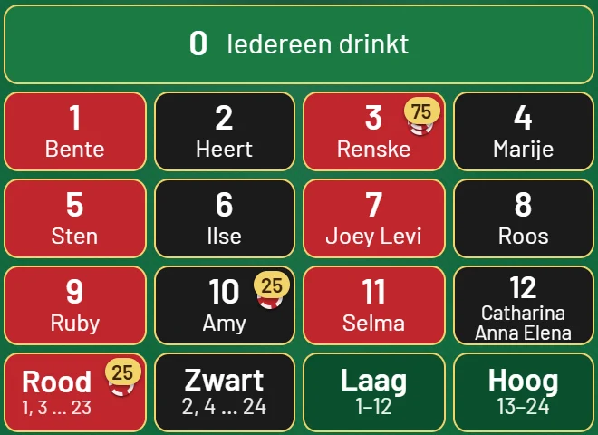
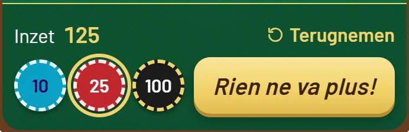
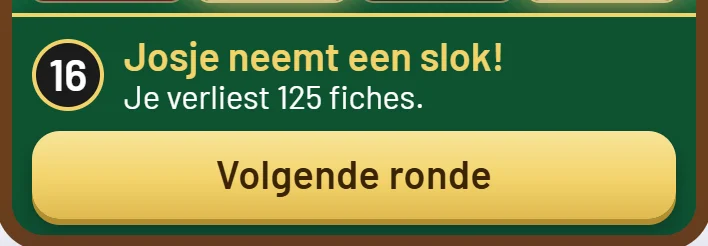

De hele tafel
Speel de toestanden na met de knoppen. De tafel is hier 720 px hoog, zoals op een telefoon van 390×844.

Het wiel van dichtbij

- Houten rand met banen nerf (licht en donker), een gelakte glans aan de bovenkant en een schaduw naar binnen.
- Kom: de baan van het balletje ligt dieper dan de rand, met een donkere schaduw langs de buitenkant en een randje licht op de lip.
- Vakjes met dunne metalen wandjes (licht met een donkere kant) en een metalen ring tussen getallen en vakjes.
- Getallen in Barlow Condensed (de smalle letter van de app), vet, altijd op dezelfde afstand van de rand. Geen nieuw lettertype.
- Ruiten van chroom met een lichtrug en een kleine slagschaduw.
- Draaiknop van gepolijst messing: armen met een lichtstreep, bolletjes met een lichtvlek, en een vaste lichtvlek op de kop die niet meedraait.
- Balletje ivoorwit met een glansvlekje en een schaduwtje. Het beweegt nu met een transform (een translate), de staart blijft zoals hij is.
- Sneller: de drop-shadow-filters op het wiel en het balletje gaan eraf (die moesten elk beeld opnieuw); de schaduw onder het wiel is een verloop. Het wiel krijgt een eigen laag.
Speelveld en fiches

- Gedrukt op vilt: dieper rood en zwart, licht doorschijnend zodat de stofstructuur er doorheen komt, een dun crèmegouden lijntje van 1 px rondom (overal even dik) en bijna rechte hoeken.
- 0 heeft een eigen vak: dubbele lijn en het getal in een ringetje.
- Nummers in Barlow Condensed, groter en vet; de namen rustig en iets zachter wit. Rood, Zwart, Laag, Hoog in kapitalen, zoals op een tafel.
- Fiches op tafel: echte minifiches met randblokjes, inleg, een randje dikte en schaduw; een stapel verspringt een beetje. Het bedrag staat als klein goudlabel ernaast.
Bediening en uitslag


- Fichekeuze in hetzelfde materiaal als de fiche in het logo: randblokjes, inlegvlak met goudlijn, glans. De gekozen fiche ligt opgetild met een grotere schaduw en een gouden ring.
- Rien ne va plus! in het goud van het logo, licht bol. Uitgeschakeld: dof, plat goud met witte gewone letter (geen stippellijn meer).
- Uitslag als bordje: vilt, gouden lijn en een houten lijst, het getal als glanzend balletje in de kleur van het vak, de knop in dezelfde goudstijl. Zelfde plek en grootte als nu.
- Licht: het winnende vak en het vakje op het wiel lichten één keer zacht goud op en houden daarna een gouden lijn (nu knippert het drie of vier keer).
- Confetti alleen bij een flinke winst (minstens drie keer je inzet terug, dus een getal raak, niet alleen een kleur), in goud, rood en wit. Bij minder beweging: geen puls en geen confetti, alleen de gouden lijn.
- Contrast: wit op het nieuwe rood 7,6 : 1, op zwart 18 : 1; goud op het vilt van de bediening 6,4 : 1; donkerbruin op het knopgoud 6,8 : 1 of hoger.